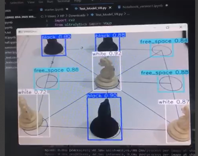
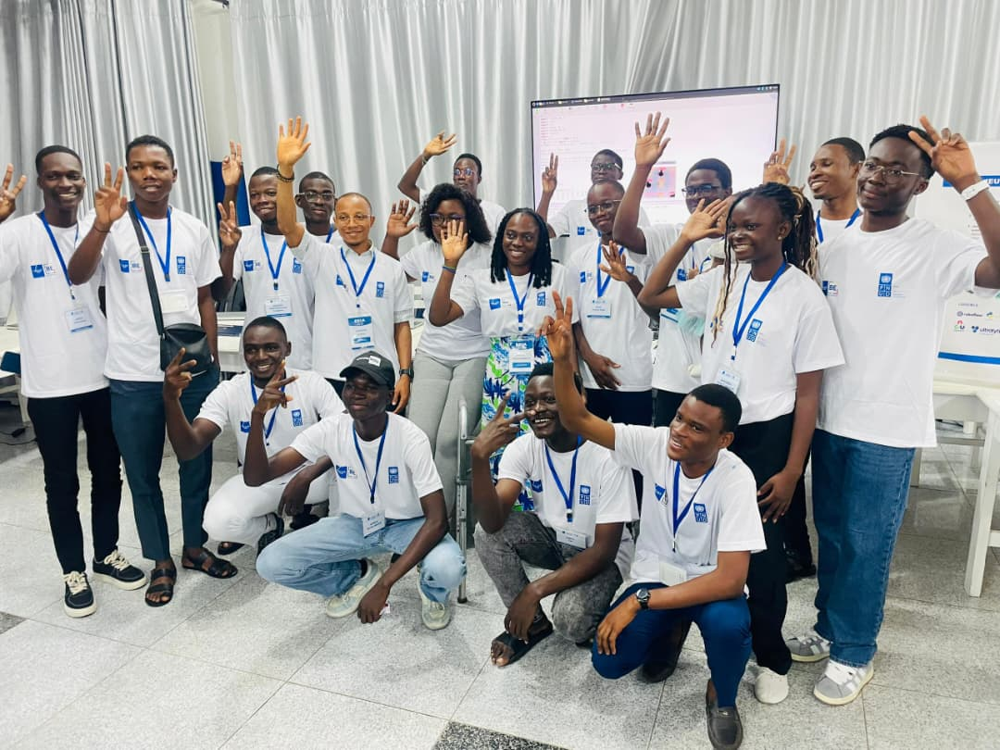

← Retour au portfolio
Bras robotique —

P / 02
Bras robotique —
Tic-Tac-Toe par renforcement
Description
Développement d'un agent de Deep Reinforcement Learning (DQN/PPO) pour le contrôle autonome d'un bras robotique jouant au tic-tac-toe, avec détection visuelle de l'état du plateau.
PLACEHOLDER_DESCRIPTION_PARAGRAPH_2
PLACEHOLDER_DESCRIPTION_PARAGRAPH_3
Démonstration
Galerie


Résultats clés
- Agent DQN entraîné — précision 98 % sur partie complète
- Pipeline vision YOLO pour la détection du plateau et des pièces
- Inférence temps réel embarquée sur Raspberry Pi 5
Technologies
- Python
- PyTorch
- YOLO
- RL (DQN / PPO)
- Raspberry Pi 5